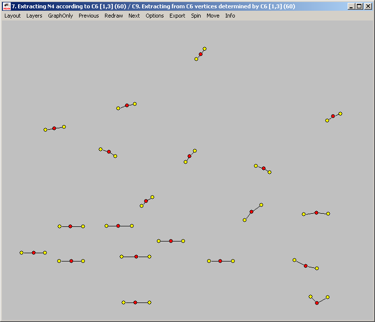
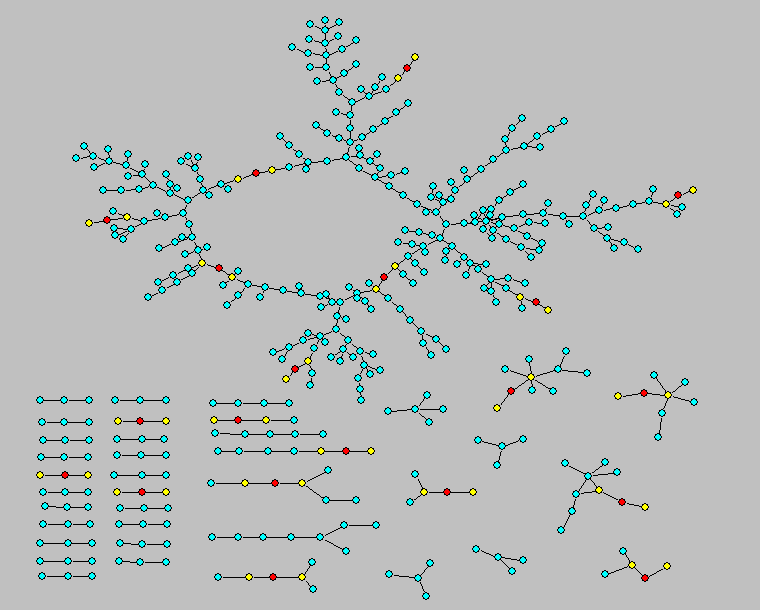
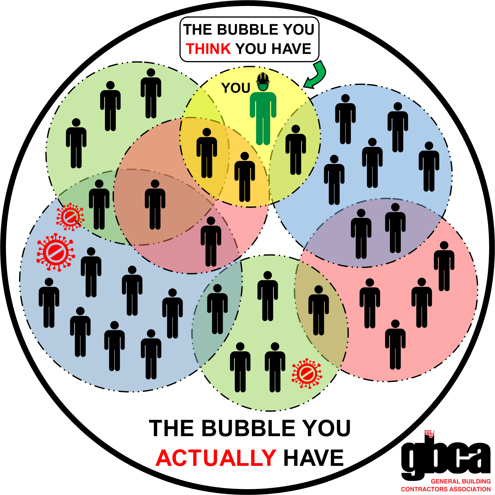

Welcome to COM 411: Communication and Social Networks!
About me


Dad Joke
Why did the nearsighted man fall in the well?
He couldn’t see that well!
Introductions
- Name
- Year
- Major
- Closest connection to a famous person
What is Communication and Social Networks?


NOT THIS KIND OF SOCIAL NETWORK!
Who you are connected to can be more important than who you are

Who you are connected to can be more important than who you are

Who you are connected to can be more important than who you are

Goals
- Understand the foundations of network theory and analysis
- Critically read social network studies
- Learn how social networks relate to your own interests
- Gain a basic understanding of gathering and analyzing network data in R
How we reach those goals
About the class
- Building a learning community
- Discussions vs. lectures
- Resolving confusion
- Project-based
Grading
- Normal grading has some negative unintended
consequences

- How can we build a learning community?
Grading
- I’m interested in teaching, not assessing
- Goal is to build structures that encourage learning and accountability
- Assignments will be turned in on Brightspace and/or discussed in class
- I will provide general feedback
- 3 times during the semester you will turn in reflection pieces
- If I disagree I will reach out
Dangers of this approach to grading
Class Meetings
- Most content is asynchronous
- Readings
- Video lectures
- Tuesdays
- Discussion questions due on Mondays (Google Docs link)
- Time discussing + reviewing homework
- Random cold calling
- I will track whether you are prepared
- Thursdays
- Activities
- R Labs
- Co-working / Office Hours
Class meetings
- I will work hard to make our classes valuable
- Do the same; be open and engaged
Assignments
- Homework
- Social network concepts
- Programming practice
- Reading
- 3-2-1 on Brightspace
- 3 things you learned / connections made
- 2 questions / things that are still confusing
- 3-2-1 on Brightspace
- 1 disucssion question for class
- Discussion Questions due Monday at noon
- Participation (in-class and online)
Readings
- Academic papers
- Typically linked from wiki
- A few on Brightspace (I will make this clear)
- Textbooks
- Networks, Crowds and Markets
- Introduction to social network methods
Programming
- You will understand what this means! :)
Exam
- One exam
- Goal is to encourage self-accountability
Final Project
Options:
- “Pitch” to an organization about how what you have learned could be used to help their organization
- Group project: network-based intervention (e.g., spreading an idea on campus)
- (Group?) research project: analysis of network data
Resources
Discord
- Conversation and questions
- Help
- In general, ask publicly so others can answer / see the answer
Wiki
- Schedule
- Links to readings
- Links to assignments
Brightspace
- Some readings
- Submit assignments
Office Hours
- Tuesdays, 2-4
- Also open to meeting virtually
Please be vocal
- I will solicit feedback as part of reflections
- Let me know what is and isn’t working
Assignments
- Read the syllabus
- This Thursday will be a (fun!) synchronous activity
- Bring your computer, if you have one
- Make sure you are signed up on Discord
Social networks are much more interesting!